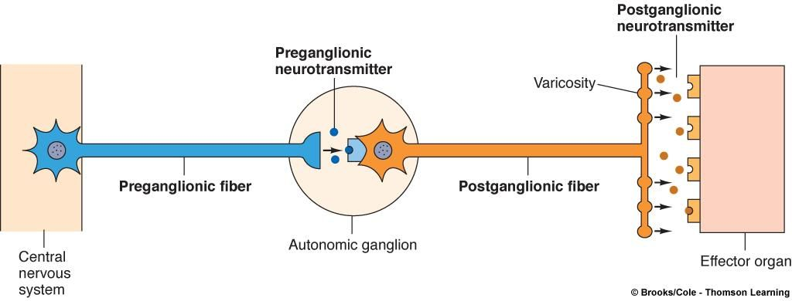
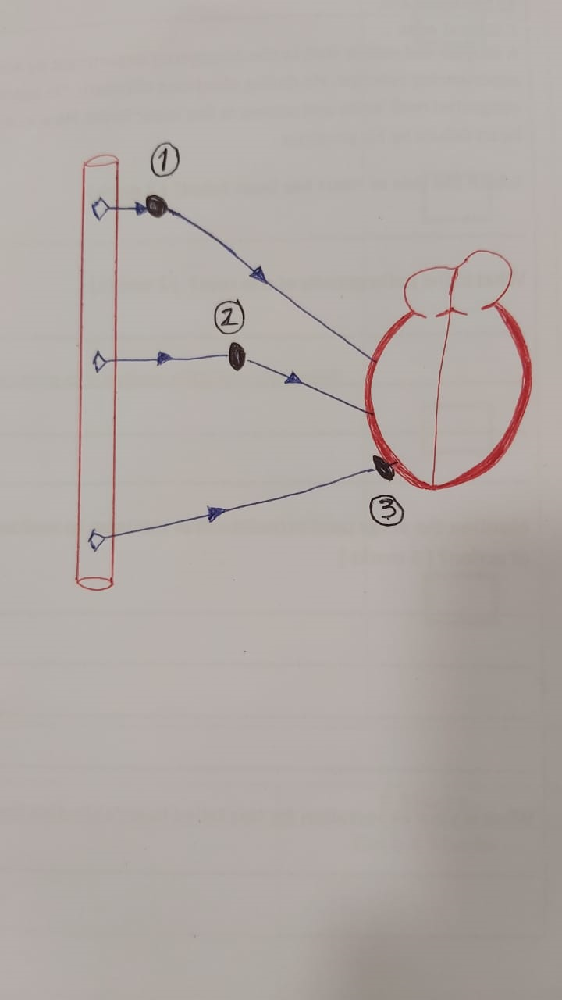
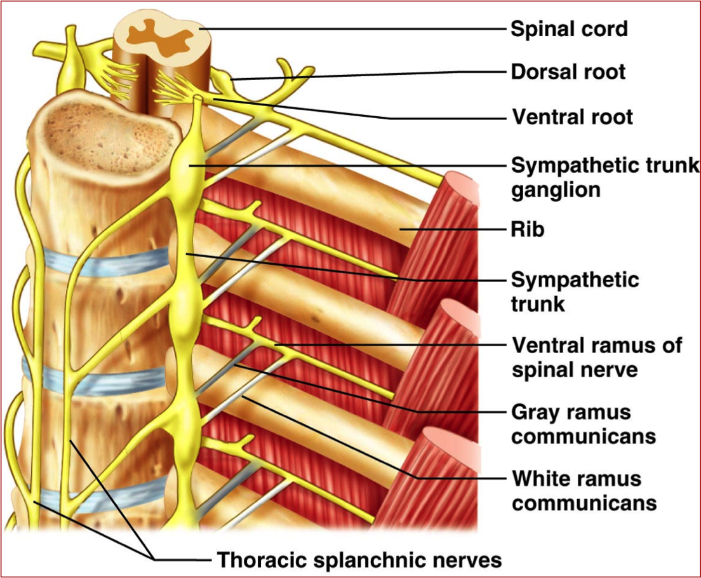
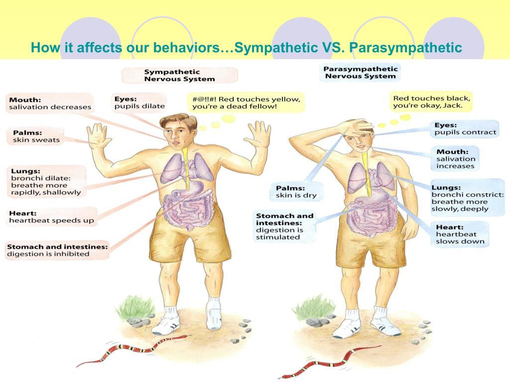
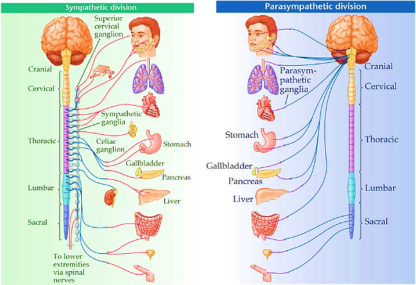
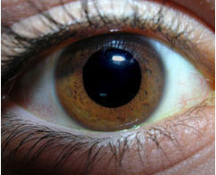
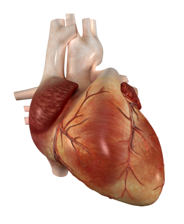
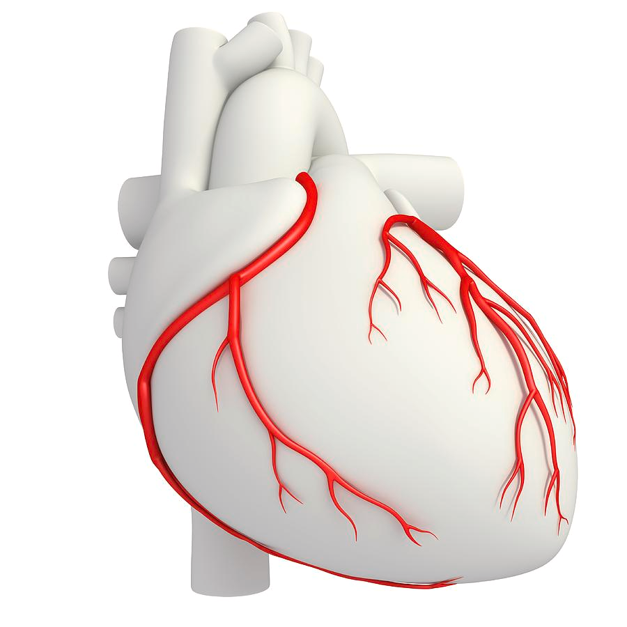
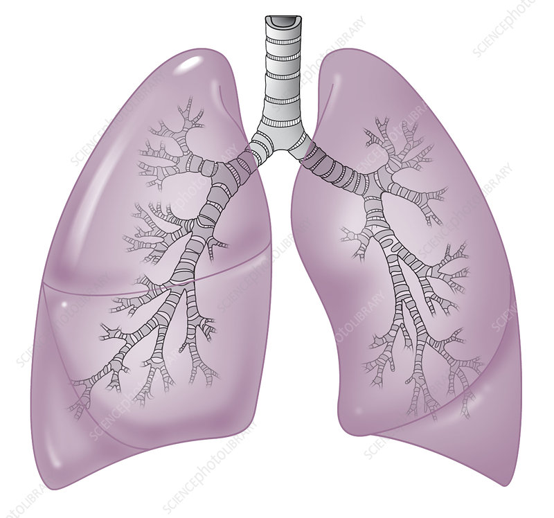

فسيولوجي — المحاضرة الثانية
🧠 الجهاز العصبي الذاتي — Autonomic Nervous System
شرح مبسّط وشامل للشرائح 6 إلى 16 — العقد العصبية، أقسام الجهاز الذاتي، الجهاز السمبثاوي (السمبساوي) والباراسمبثاوي (بارا سمبساوي) وتأثيراتهما على الجسم
📖 11 شريحة شرح
❓ 22 سؤال تفاعلي
🔊 صوت لكل مصطلح
🖼️ صور من المحاضرة
1. مراجعة المسار الذاتي
2. العقد الذاتية
3. Paravertebral
4. Collateral & Terminal
5. أقسام الجهاز الذاتي
6. منشأ السمبثاوي
7. السمبثاوي على الرأس
8. السمبثاوي على القلب
9. السمبثاوي على الرئة
10. الاختبار
11. قاموس المصطلحات
1 مراجعة سريعة — مسار الجهاز الذاتي
قبل ما ندخل في التفاصيل، خليني أذكّرك بالصورة الكاملة للمسار الذاتي.

Preganglionic Fiber
المعنى: الألياف قبل العقدة | النطق: بري-جانجليونيك فايبر
هي الألياف الخارجة من الـ CNS وتنتهي عند العقدة العصبية.
المعنى: الألياف قبل العقدة | النطق: بري-جانجليونيك فايبر
هي الألياف الخارجة من الـ CNS وتنتهي عند العقدة العصبية.
Postganglionic Fiber
المعنى: الألياف بعد العقدة | النطق: بوست-جانجليونيك فايبر
الألياف من العقدة للعضو المستهدف.
المعنى: الألياف بعد العقدة | النطق: بوست-جانجليونيك فايبر
الألياف من العقدة للعضو المستهدف.
Varicosity
المعنى: تضخمات على طول الألياف | النطق: فاريكوسيتي
نقاط إفراز الناقلات العصبية على الألياف الـ Postganglionic — زي رشة مطر على العضو!
المعنى: تضخمات على طول الألياف | النطق: فاريكوسيتي
نقاط إفراز الناقلات العصبية على الألياف الـ Postganglionic — زي رشة مطر على العضو!
Effector Organ
المعنى: العضو المستهدف | النطق: إفيكتور أورجان
القلب، الغدد، العضلات الملساء — الأعضاء التي تستقبل الأوامر من الجهاز الذاتي.
المعنى: العضو المستهدف | النطق: إفيكتور أورجان
القلب، الغدد، العضلات الملساء — الأعضاء التي تستقبل الأوامر من الجهاز الذاتي.
CNS → Preganglionic Fiber → Autonomic Ganglion → Postganglionic Fiber → Effector Organ
الفرق الجوهري:
• Somatic: خلية واحدة → عضلة هيكلية (مباشرة)• Autonomic: خليتان + Ganglion → أعضاء داخلية
Q1: What is the relay station between the two neurons in the Autonomic pathway called?
ما اسم محطة الترحيل الموجودة بين الخليتين في مسار الـ Autonomic؟
Q2: The Postganglionic fiber releases neurotransmitter through multiple points called:
الألياف الـ Postganglionic تطلق الناقل العصبي من خلال نقاط متعددة تسمى:
2 العقد العصبية الذاتية — Autonomic Ganglia

Autonomic Ganglia
التعريف: تجمعات من الخلايا العصبية (Collection of neurons) خارج الـ CNS.
الوظيفة: مركز توزيع (Distributing Center) للإشارات العصبية.
التعريف: تجمعات من الخلايا العصبية (Collection of neurons) خارج الـ CNS.
الوظيفة: مركز توزيع (Distributing Center) للإشارات العصبية.
للعقد الذاتية 3 أنواع رئيسية:
① Paravertebral Ganglia
- على جانبي العمود الفقري
- Sympathetic فقط
- تشكّل Sympathetic Chain
② Collateral Ganglia
- في المنتصف بين الحبل الشوكي والأحشاء
- Sympathetic + Parasympathetic
③ Terminal Ganglia
- بجوار أو داخل الأحشاء
- Parasympathetic فقط
قاعدة سريعة:
• Paravertebral → Sympathetic فقط• Collateral → Symp + Parasym
• Terminal → Parasympathetic فقط
Q3: What is the main function of Autonomic Ganglia?
ما الوظيفة الرئيسية للعقد الذاتية؟
Q4: Which ganglia type serves as a relay for Parasympathetic ONLY?
أي نوع عقدة يخدم الجهاز الباراسمبثاوي فقط؟
3 Paravertebral Ganglia — العقد الجانبية للعمود الفقري

Paravertebral Ganglia
المعنى: العقد المجاورة للعمود الفقري | النطق: بارا-فيرتيبرال جانجليا
المعنى: العقد المجاورة للعمود الفقري | النطق: بارا-فيرتيبرال جانجليا
- المكان: على كلا جانبي العمود الفقري
- الوظيفة: محطة الترحيل الخاصة بالجهاز السمبثاوي (Sympathetic) فقط
- التكوين: Sympathetic Chain / Sympathetic Trunk — سلسلة متصلة بطول العمود
Q5: Where are Paravertebral (Lateral) Ganglia located?
فين بالضبط توجد الـ Paravertebral Ganglia؟
4 Collateral & Terminal Ganglia
① Collateral Ganglia
المكان: منتصف الطريق بين الحبل الشوكي والأحشاء
الوظيفة: ترحيل للجهاز السمبثاوي والباراسمبثاوي معاً
الوظيفة: ترحيل للجهاز السمبثاوي والباراسمبثاوي معاً
② Terminal Ganglia
المكان: بالقرب من أو داخل الأحشاء نفسها
الوظيفة: ترحيل للجهاز الباراسمبثاوي (Parasympathetic) فقط
الوظيفة: ترحيل للجهاز الباراسمبثاوي (Parasympathetic) فقط
| النوع | المكان | الترحيل |
|---|---|---|
| Paravertebral | على جانبي العمود الفقري | Sympathetic فقط |
| Collateral | في المنتصف | Symp + Parasym |
| Terminal | بجوار / داخل الأحشاء | Parasympathetic فقط |
Q6: Collateral Ganglia serve as relay stations for:
الـ Collateral Ganglia تعمل كمحطة ترحيل لـ:
5 أقسام الجهاز العصبي الذاتي

Sympathetic Nervous System
المعنى: الجهاز العصبي السمبثاوي (السمبساوي) | النطق: سيمباثيتيك نيرفَس سيستم
يُعرف بـ "Fight or Flight" — جهاز الطوارئ والتحفيز.
المعنى: الجهاز العصبي السمبثاوي (السمبساوي) | النطق: سيمباثيتيك نيرفَس سيستم
يُعرف بـ "Fight or Flight" — جهاز الطوارئ والتحفيز.
Parasympathetic Nervous System
المعنى: الجهاز العصبي الباراسمبثاوي (بارا سمبساوي) | النطق: بارا-سيمباثيتيك نيرفَس سيستم
يُعرف بـ "Rest and Digest" — جهاز الراحة والهضم.
المعنى: الجهاز العصبي الباراسمبثاوي (بارا سمبساوي) | النطق: بارا-سيمباثيتيك نيرفَس سيستم
يُعرف بـ "Rest and Digest" — جهاز الراحة والهضم.

طريقة التذكر:
🏃 Sympathetic = Fight or Flight (لما تشوف أسد!)😴 Parasympathetic = Rest and Digest (لما تنام وتاكل)
Q7: Which division of the ANS is known as "Fight or Flight"?
أي قسم من الجهاز الذاتي يُعرف بـ Fight or Flight؟
6 منشأ الجهاز السمبثاوي — Sympathetic Origin
Thoracolumbar
المعنى: صدري-قطني | النطق: ثوراكو-لمبار
Thoraco = كل الفقرات الصدرية (All Thoracic)
Lumbar = أول 3 فقرات قطنية (L1, L2, L3)
المعنى: صدري-قطني | النطق: ثوراكو-لمبار
Thoraco = كل الفقرات الصدرية (All Thoracic)
Lumbar = أول 3 فقرات قطنية (L1, L2, L3)
Sympathetic Origin = All Thoracic segments + Upper 3 Lumbar (L1, L2, L3)
نقطة مهمة للامتحان:
كلمة واحدة تلخص كل شيء: Thoracolumbar = صدري + أول 3 قطني
Q8: The origin of the Sympathetic Nervous System is described as:
منشأ الجهاز السمبثاوي يوصف بأنه:
7 تأثيرات السمبثاوي على الرأس والرقبة
🔵 على العين:

- اتساع الحدقة — Mydriasis
بسبب انقباض Dilator Pupillae Muscle - ارتفاع الجفن العلوي — توسيع الشق الجفني Palpebral Fissure
- تقليل إفراز الدموع من الغدة الدمعية — Lacrimal Gland
💦 على الغدد اللعابية:
- تقليل إفراز اللعاب — Salivary Glands
ده سبب إن فمك بيبقى جاف لما تكون خايف!
Q9: Sympathetic stimulation of the eye causes pupil:
تنشيط الجهاز السمبثاوي يجعل الحدقة:
Q10: Why does your mouth become dry when you are scared?
ليه بقفّش فمك لما تكون خايف؟
8 تأثيرات السمبثاوي على القلب

- زيادة الاستثارة وسرعة التوصيل الكهربائي
- التأثير الإيجابي الإينوتروبيك — +Inotropic Effect
زيادة قوة الانقباض (Increase Force of Contraction) - التأثير الإيجابي الكرونوتروبيك — +Chronotropic Effect
زيادة معدل ضربات القلب (Increase Heart Rate) - توسيع الأوعية التاجية — Vasodilatation of Coronary Vessels

كل تأثيرات السمبثاوي على القلب إيجابية +:
✅ قوة الانقباض → تزيد (+Inotropic)✅ معدل الضربات → يزيد (+Chronotropic)
✅ التوصيل الكهربائي → يزيد
✅ الأوعية التاجية → تتوسع (Vasodilatation)
Q11: Positive Chronotropic Effect means:
التأثير الكرونوتروبيك الإيجابي يعني:
Q12: What happens to coronary vessels under Sympathetic stimulation?
ماذا يحدث للأوعية التاجية عند تنشيط الجهاز السمبثاوي؟
9 تأثيرات السمبثاوي على الرئة

- توسيع القصبات — Bronchodilatation
ارتخاء عضلات القصبة → هواء أكثر → أكسجين أكثر - تضيق الأوعية الرئوية — Vasoconstriction of Pulmonary Vessels
تذكّر الفرق في الرئة:
• Bronchi → Dilatation (قصبات تتوسع ✅)• Pulmonary Vessels → Constriction (أوعية تتضيق ⚠️)
Q13: Sympathetic stimulation causes the bronchi to:
تنشيط الجهاز السمبثاوي يجعل القصبات الهوائية:
Q14: What is the effect of Sympathetic NS on Pulmonary Blood Vessels?
ما تأثير الجهاز السمبثاوي على الأوعية الرئوية؟
10 الاختبار الشامل (8 أسئلة)
اختبار على كل ما تعلمناه — اختر الإجابة وشوف نتيجتك!
النتيجة
0 / 8
النسبة
0%
ابدأ الاختبار
QZ1: The ANS is part of which division?
الجهاز الذاتي جزء من أي قسم؟
QZ2: Sympathetic NS is known as:
الجهاز السمبثاوي يُعرف بـ:
QZ3: Which ganglia type is located NEAR or INSIDE the visceral organs?
أي نوع عقدة بجوار أو داخل الأحشاء؟
QZ4: Positive Inotropic Effect means:
التأثير الإينوتروبيك الإيجابي يعني:
QZ5: Sympathetic NS causes the upper eyelid to:
الجهاز السمبثاوي يجعل الجفن العلوي:
QZ6: Sympathetic origin includes which lumbar segments?
منشأ الجهاز السمبثاوي يشمل أي الفقرات القطنية؟
QZ7: Paravertebral Ganglia form a chain called:
الـ Paravertebral Ganglia تكوّن سلسلة تسمى:
QZ8: Postganglionic fiber releases neurotransmitter via:
الألياف Postganglionic تطلق الناقل العصبي عن طريق:
11 قاموس المصطلحات — مع الصوت 🔊
اضغط على زر الصوت لسماع نطق كل مصطلح:
Autonomic Gangliaالعقد العصبية الذاتية — مراكز توزيع
Preganglionic Fiberالألياف قبل العقدة — من CNS للعقدة
Postganglionic Fiberالألياف بعد العقدة — من العقدة للعضو
Varicosityتضخمات إفراز الناقلات العصبية
Effector Organالعضو المستهدف (القلب، الغدد، العضلات الملساء)
Paravertebral Gangliaعقد على جانبي العمود — Sympathetic فقط
Collateral Gangliaعقد في المنتصف — Symp + Parasym
Terminal Gangliaعقد نهائية بجوار الأحشاء — Parasym فقط
Sympathetic NSالجهاز السمبثاوي — Fight or Flight
Parasympathetic NSالجهاز الباراسمبثاوي — Rest and Digest
Thoracolumbarمنشأ الجهاز السمبثاوي (صدري + L1,L2,L3)
Sympathetic Chain / Trunkسلسلة العقد السمبثاوية على العمود الفقري
Mydriasisاتساع الحدقة — تأثير الجهاز السمبثاوي
Miosisتضيق الحدقة — تأثير الجهاز الباراسمبثاوي
Dilator Pupillae Muscleعضلة موسّع الحدقة — ينقبض بتأثير السمبثاوي
Palpebral Fissureالشق الجفني — يتسع بتأثير السمبثاوي
Lacrimal Glandالغدة الدمعية — يقل إفرازها مع السمبثاوي
Salivary Glandsالغدد اللعابية — يقل إفرازها مع السمبثاوي
+Inotropic Effectزيادة قوة انقباض القلب
+Chronotropic Effectزيادة معدل ضربات القلب
Coronary Vesselsالأوعية التاجية — تتوسع مع السمبثاوي
Vasodilatationتوسيع الأوعية الدموية
Vasoconstrictionتضيق الأوعية الدموية
Bronchodilatationتوسيع القصبات الهوائية
Bronchoconstrictionتضيق القصبات — تأثير الجهاز الباراسمبثاوي
Pulmonary Vesselsالأوعية الرئوية — تتضيق مع السمبثاوي
Fight or Flightجهاز الطوارئ — استجابة الجهاز السمبثاوي
Rest and Digestجهاز الراحة — استجابة الجهاز الباراسمبثاوي
ملخص المحاضرة في 5 نقاط:
- Ganglia = مركز توزيع خارج الـ CNS — 3 أنواع (Para, Collateral, Terminal)
- Paravertebral → Symp فقط | Terminal → Parasym فقط
- Sympathetic = Thoracolumbar (All Thoracic + L1, L2, L3)
- على القلب: +Inotropic ↑ + +Chronotropic ↑ + Coronary Vasodilatation
- على الرئة: Bronchodilatation ↑ + Pulmonary Vasoconstriction ↓